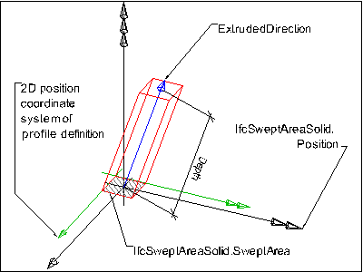
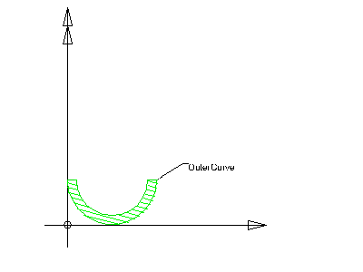
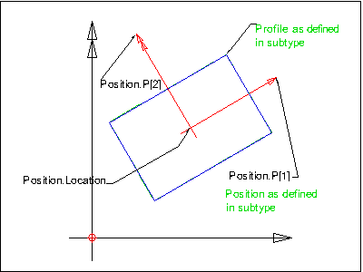

IFC is the ISO standard format for storing BIM data. IfcOpenShell is a project that has a Python library that allows you to parse IFC files. To start off with, you will need to download and install IfcOpenShell python. There is currently no API documentation for IfcOpenShell, but it isn't hard to work out given that it derives mostly from the IFC specification.
While parsing IFC files, if you would like to view IFC files using open-source viewers that are available on Linux, Windows, and Macs, I would recommend reading how to view BIM IFC files on Linux. These viewers are open-source and are relatively strict, as opposed to commercial viewers like Revit which do a very poor job of parsing IFCs correctly, or viewers like Solibri which are very lenient with their parsing and promote badly structured IFCs.
The examples below use 2X3, as right now is it assumed that most IFC files floating out there are 2X3, but the principles still apply to IFC4. As of writing, IfcOpenShell determines IFC2X3 or IFC4 parsing based on a compile-time flag, which by default is set to IFC2X3. If you wish to use IFC4, you will need to compile IfcOpenShell with USE_IFC4=Y.
Let's start with loading an IFC file:
import ifcopenshell
ifc_file = ifcopenshell.open('/path/to/your/file.ifc')
Getting all types of an IFC class, and listing what they are:
products = ifc_file.by_type('IfcProduct')
for product in products:
print(product.is_a())
Merely printing a keyword by itself spits out the IFC string that defines it:
print(product) # Prints #38=IfcWall('3OFfnkBQ0HwPPAt4e_Z09T',#5,'Wall','',$,#35,#37,$)
The is_a() function also works as a boolean.
ifc_file.by_type('IfcWall')[0].is_a('IfcWall') # True
ifc_file.by_type('IfcWall')[0].is_a('IfcSlab') # False
This convention of pythonic lowercase underscore naming ends with by_type() and is_a(). All the rest of the parameters are generated from the IFC schema, which uses CapsCase. The rest of the naming also doesn't follow common programming convention (e.g. predicate prefixes such as is should only return boolean). You will commonly find confusingly named parameters that suggest booleans or otherwise, but may instead return a set or some other value. Oh well.
Getting attributes of any IFC data is through simple dot notation. The parameter name matches exactly what is shown in the IFC schema, including the CapsCase convention.
wall = ifc_file.by_type('IfcWall')[0]
print(wall.GlobalId)
print(wall.Name)
The parameter also returns sets and relationships, such as in the following example where we want to list the property sets associated with a wall. According to the IfcWall specification:
The property sets relating to the IfcWall are defined by the IfcPropertySet and attached by the IfcRelDefinesByProperties relationship. It is accessible by the inverse IsDefinedBy relationship.
Therefore we can use the IsDefinedBy relationship, which returns a SET OF IfcRelDefines FOR RelatedObjects;. The IfcRelDefines is an abstract supertype, and so in this particular situation (a property set relationship), we expect an IfcRelDefinesByProperties which has a RelatingPropertyDefinition to store the property set itself. This property set is an IfcPropertySetDefinition. Which, again, is an abstract supertype, but at least it nominates a Name parameter at this level. This is the name of the property set.
wall = ifc_file.by_type('IfcWall')[0]
for definition in wall.IsDefinedBy:
# To support IFC2X3, we need to filter our results.
if definition.is_a('IfcRelDefinesByProperties'):
property_set = definition.RelatingPropertyDefinition
print(property_set.Name) # Might return Pset_WallCommon
In this scenario, the abstract supertype IfcPropertySetDefinition is only subtyped by IfcPropertySet, which has a confusingly named HasProperties parameter which holds a set of IfcProperty. The type of IfcProperty varies, which we can check using is_a().
for property in property_set.HasProperties:
if property.is_a('IfcPropertySingleValue'):
print(property.Name)
print(property.NominalValue.wrappedValue)
Other data, such as quantity use, also uses the isDefinedBy relationship, but we can distinguish it using is_a().
wall = ifc_file.by_type('IfcWall')[0]
for definition in wall.IsDefinedBy:
related_data = definition.RelatingPropertyDefinition
if related_data.is_a('IfcPropertySet'):
pass
elif related_data.is_a('IfcElementQuantity'):
print_element_quantities(related_data)
There are many types of IFC quantities, so we'll have to handle them carefully. But this example just handles IfcQuantityLength:
def print_element_quantities(element_quantity):
for quantity in element_quantity.Quantities:
print(quantity.Name)
if quantity.is_a('IfcQuantityLength'):
print(quantity.lengthValue)
You can also get geometry data, starting with the placement of any IFC element. IFC object placements are complex, and so you should take care to see how coordinates derive from the various spatial containers in IFC.
if wall.ObjectPlacement.PlacementRelTo:
# Inherit the coordinates of its parents
pass
local_coordinates = wall.ObjectPlacement.RelativePlacement.Location[0]
Finally, you can also get the actual geometric representation of an IFC element. Just like placements, IFC representations are complex. There are many types, and an IFC element may have multiple representations in different contexts. This is beyond the scope of the quick demonstration. In this example, we will not go into detail, but simply deal with a typical extruded object from an axis, which is a very common type of object as shown below.

We will also see how to access the underlying profile which is used in the extrusion, as shown below.

This code will access the relevant geometry data:
geometry = wall.Representation.Representations[0].Items[0] # An IfcExtrudedAreaSolid in this example
print(geometry.Position.Location[0]) # The centroid of the wall, so if the wall axis goes from (0, 0, 0) to (4, 0, 0) it will be (2, 0, 0)
print(geometry.ExtrudeDirection) # A vector pointing up (0, 0, 1)
print(geometry.Depth) # The height of the wall, say 3000
print(geometry.SweptArea) # A closed and filled area curve that can be extruded into a manifold, solid object
print(geometry.SweptArea.OuterCurve.Points) # the list of points that are in the polyline
The points (i.e. geometry.SweptArea.OuterCurve.Points) give coordinates relative to geometry.Position.Location[0].

Geometry is quite delicate, and I would discourage attempting to be bold and edit it by hand unless you want a headache. There are plenty of tools out there that can help you do this, or to visualise the geometry.
For more examples, you can see an example of IfcOpenShell in use to build a simple viewer here.
And so ends this short introduction. If you are interested in helping push IFC, I recommend downloading FreeCAD and help writing code to make it the best open-source BIM authoring tool out there!